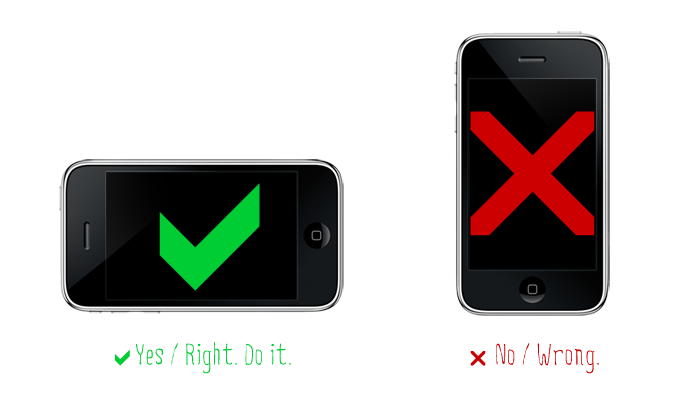

Willkommen zum Reaktionsexperiment
Grundlegendes zu den Experimenten
Es wird ein Rechteck von variabler Größe auf ihrem Bildschirm erscheinen. Klicken Sie so schnell wie möglich auf das Rechteck.
Dies ist eine Wiederholung. Jedes Experiment besteht aus 50 Wiederholungen.
Jedes Experiment muss sowohl auf dem Smartphone als auch auf dem PC durchgeführt werden.
Wichtig: Falls Sie das Experiment vom Smartphone aus absolvieren, muss das Handy im Landscape Modus sein. (siehe
Bild)

Zusatzinformationen zu Experiment 1
Im ersten Experiment erscheint ein Rechteck von variabler Größe auf halber Höhe des Bildschirms (nur die x-Koordinate wird
zufällig generiert).
Zu Experiment 1
Zusatzinformationen zu Experiment 2
Im zweiten Experiment erscheint ein Rechteck von variabler Größe irgendwo auf dem Bildschirm (x- und y-Koordinate werden
zufällig generiert).